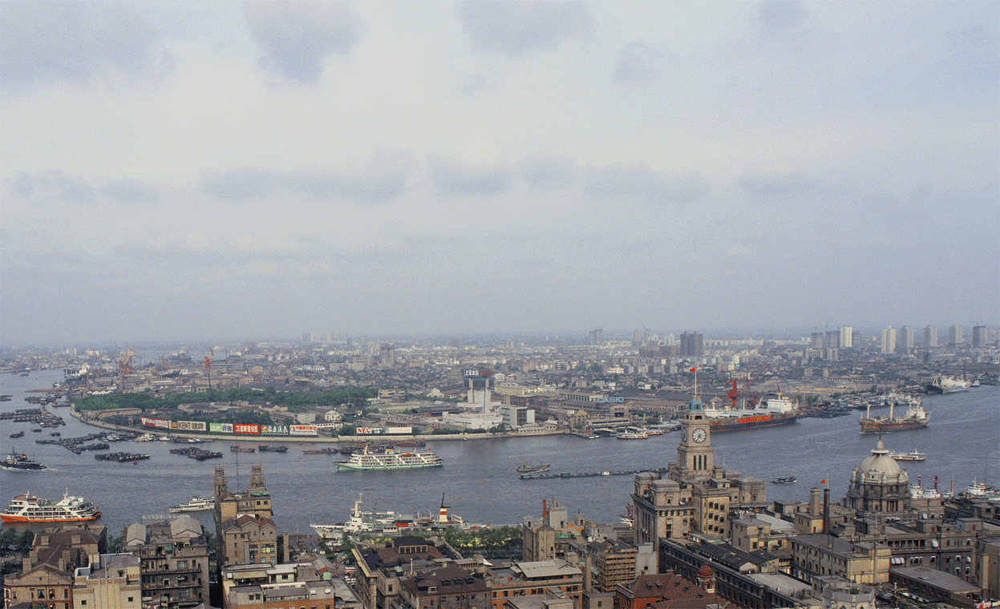
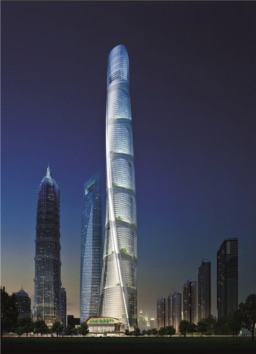
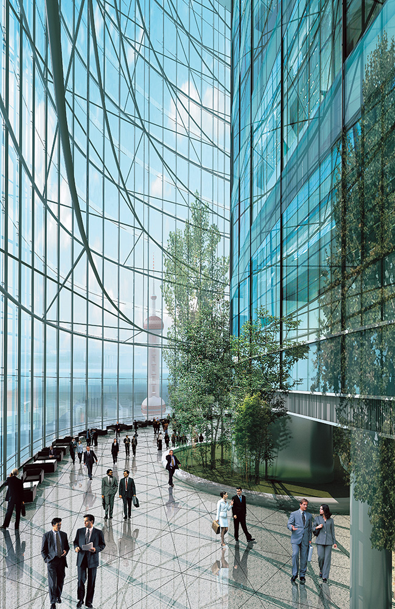
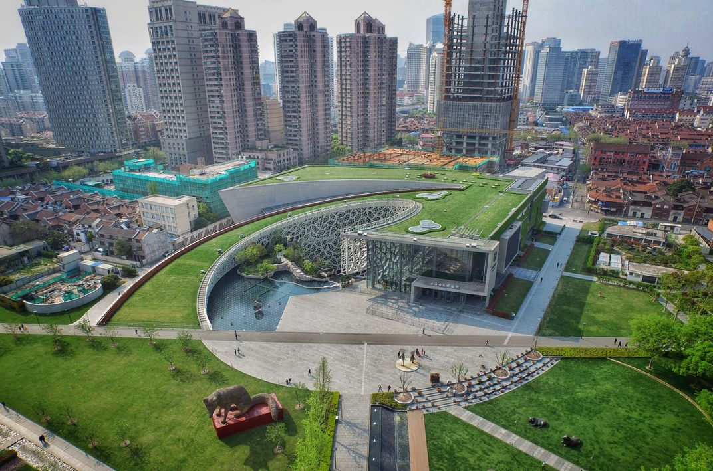
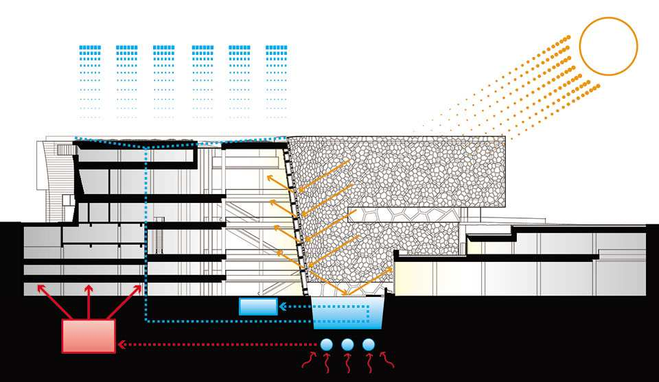
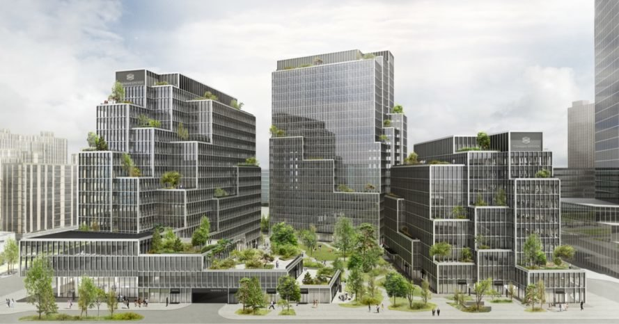

An examination of Shanghai's sustainable architecture
by Wyatt Ruttle
In the last 30 years, China has seen a prompt expansion in economic growth and industrialisation. With this growth comes new cities, new buildings, and an increase in energy consumption. Shanghai is the epitome of this growth. Shanghai, the third largest city in the world, has quintupled in population since 1980. As Shanghai rapidly expanded, so did their pollution. For years now China has been the biggest polluter in the world and is responsible for almost 30% of all emissions. Of that pollution, China’s building consumption accounts for about one third of all their social energy consumption. Luckily, sustainable development technologies are becoming more and more popular.
For a nation where pollution is so abundant that smog is responsible for more than a third of all deaths, the push for green architecture is critical. To change their presence on the globe and enhance the quality of life for their citizens, China is developing revolutionary sustainable buildings. A perfect example of this is the shanghai tower.
The structure stands 632 meters tall making it the second tallest building in the world. It incorporates over 40 different sustainable technologies that make the building LEED Platinum. LEED stands for “Leadership in Energy and Environmental Design” and is the most widely used sustainable building rating system in the world. The building is designed in the shape of a twisting glass facade that makes it both visually appealing and more efficient. The 120 degree twist of the building reduces wind load by more than 20% and helps reduce the amount of steel needed for construction by more than a quarter. For power, the building mainly uses conventional energy sources. However, at least 10% of the energy comes from the 270 vertical axis wind turbines planted around the exterior of the building. The building also collects rainwater to use throughout the building and recycles the wastewater to flush toilets and water gardens. The building is also extremely insulated for being a 632 meter tall spiral of glass. The glass used is double layered and designed specifically for insulating the building to save on heat and air conditioning waste.
The Shanghai Natural History Museum is a stunning LEED Gold certified structure that does a terrific job at integrating nature into architecture. The museum is a bioclimatic building that uses its multiple facades to heat and cool the structure appropriately. The building also incorporates a geothermal system to collect energy and heat the building during the colder seasons.
 The building has many unique ways of conserving energy. The green roof is used to insulate the building while also providing the ability to collect rain water. The collected water is fed to the pond and cools the building by evaporating heat. A cool feature of the museum is that all of the technology used to make it sustainable has been incorporated as exhibits.
In 2016 China made a statement that they planned to cut their gas emissions down by 60-65 percent. As a megacity, Shanghai will need to make some dramatic changes to help the rest of the country reach its goal. Unlike most other developed cities where the leading cause of gas emissions is transportation, Shanghai’s leading cause of emissions is manufacturing and power consumption. To make this change, Shanghai will need change many facets of the city. Some of these changes include, changing the energy system to one that is lower in carbon production, changing the economy to one that is more green focused, and making the city more compact and using land for green space and sustainable energy production.
Already there are numerous plans for more sustainable architecture. Shanghai has a 2025 plan to build new green buildings and lower energy consumption. Some examples of this are the Henning Larsen buildings and the new green spaces. Henning Larsen has proposed a set of new green residential and commercial buildings that are 40% efficient. Along with this, there are plans to create multiple green spaces along the Huangpu river.